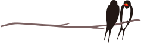
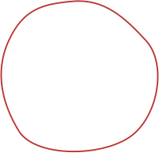
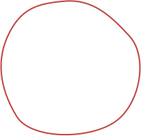

INTRODUCTION
Creating a world where everyone can do what they want through the MUSUBI project.
To achieve "human understanding and respect" and "diversity," artificial intelligence technologies that can
analyze not only individual attributes but also human relationships are necessary. Graph analysis is widely
used to analyze relationships in applications such as social network analysis in SNS users, product
recommendations in web shopping platforms like Amazon, and the structuring of knowledge in Google search.
The goal of this research project is to develop MUSUBI framework for graph analysis. We believe that advancing and democratizing graph analysis is
necessary to understand our world and to create a world where everyone can do what they want.
Graph data is often used to model relationships as data. Graph analysis techniques need to be
developed from multiple perspectives. Key challenges include prediction of labels and links within a
graph, ranking node importance, detection of patterns, and data partitioning. To address these
challenges, we aim to develop deep learning techniques, node importance analysis methods, clustering
techniques, and patten detection methods for graph data. These advancements will enable more effective
graph data analysis.
We do not focus on the utility of graph analysis but also fairness. Fair graph data analysis is
expected to develop in various fields, including sociological analysis of human relationships or the
relationships between people and professions, as well as industrial applications such as product
recommendations in e-commerce. We deepen fair graph analysis.
view more
▼
Graph data is often used to model relationships as data. Graph analysis techniques need to be
developed from multiple perspectives. Key challenges include prediction of labels and links within a
graph, ranking node importance, detection of patterns, and data partitioning. To address these
challenges, we aim to develop deep learning techniques, node importance analysis methods, clustering
techniques, and patten detection methods for graph data. These advancements will enable more effective
graph data analysis.
We do not focus on the utility of graph analysis but also fairness. Fair graph data analysis is
expected to develop in various fields, including sociological analysis of human relationships or the
relationships between people and professions, as well as industrial applications such as product
recommendations in e-commerce. We deepen fair graph analysis.
view more
▼
To evaluate the performance of graph data analysis, we will construct real-world graphs such as
knowledge graphs, SNS data, citation networks, and academic collaboration data. Additionally, we will
benchmark existing technologies through automation and graph generation techniques. By implementing a
framework that facilitates graph deep learning and data mining, we aim to democratize both graph
analysis and fair graph analysis.
view more
▼
To evaluate the performance of graph data analysis, we will construct real-world graphs such as knowledge graphs, SNS data, citation networks, and academic collaboration data. Additionally, we will benchmark existing technologies through automation and graph generation techniques. By implementing a framework that facilitates graph deep learning and data mining, we aim to democratize both graph analysis and fair graph analysis.
view more
▼
We will evaluate and clarify the social biases present in real-world graph data from a data science
perspective. Furthermore, we will assess the fairness of AI technologies through the lens of
philosophy and ethics, examining their societal impact and philosophical implications. Additionally,
we will explore the necessity of new evaluation metrics for fairness in graph analysis. Through this
approach, we aim to pursue fairness in real-world graphs and AI technologies from both data science
and philosophical-ethical perspectives.
view more
▼
We will evaluate and clarify the social biases present in real-world graph data from a data science perspective. Furthermore, we will assess the fairness of AI technologies through the lens of philosophy and ethics, examining their societal impact and philosophical implications. Additionally, we will explore the necessity of new evaluation metrics for fairness in graph analysis. Through this approach, we aim to pursue fairness in real-world graphs and AI technologies from both data science and philosophical-ethical perspectives.
view more
▼
 
